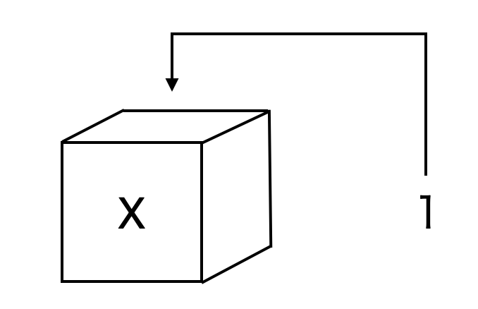

Chapter 3 基本操作
- 本章の説明がわからない人は、森知晴先生のすばらしい動画たちを参考にしてください！
3.1 四則演算
たし算: +を使う
1 + 1## [1] 2ひき算: -を使う
5 - 2## [1] 3かけ算: *を使う
4 * 5## [1] 20わり算: /を使う（分数のイメージ）
8 / 2## [1] 4累乗: ^か**を使う（例：\(4^2\)なら次のとおり）
4 ^ 2## [1] 164 ** 2## [1] 163.2 変数とオブジェクト
オブジェクトとは、色々なモノを入れる箱のようなもの1
オブジェクトを変数という人もいる（数学の変数のようなイメージだから）
本資料では変数と呼ぶことにする（字数が少ないから）
次のコードを見てみよう
x <- 1 # <- は左向矢印のイメージ
# このように#から始まる文章を書いてコメントを残せる
# これをコメントアウトと呼ぶ
# あとで見てわかりやすいような覚え書きなどを残そう
- これはxという箱を作り、その中に数字の1を入れたイメージ
（変数xに１を代入したイメージでもOK！） - 上のコードを実行しても何も表示されないが、それでOK
（「箱に入れる」だけのコードなので表示はされない） - 変数の中身を確認したい時は、オブジェクトの名前を書いて実行
x## [1] 1- 数値を代入した変数同士で演算もできる
y <- 1
z <- 2
y * z # 1*2を計算したことになる## [1] 2- 変数はいつでも上書きできる
x <- 1 #xに1を代入
x## [1] 1x <- 2 #xを2に上書き
x## [1] 2- 慣れるまでは不思議だが、こんなこともできる
z <- 2 #zに2を代入
z <- z + 1 #z=2に1を足したものを、もう一度zに代入
z #新しいzを## [1] 3- 変数には数値以外も入れることができる
- 例えば、mojiという変数を作り文字列を入れてみる
# 文字列は"ダブルコーテーション"で囲む
# 'シングルコーテーション'でも良い
# 次のようにアルファベット以外も一応使えるが推奨しない
moji <- "岡田先生ステキ"
moji## [1] "岡田先生ステキ"3.3 関数①（数値に対する関数）
関数のキホン：
- Rにはさまざまな機能を実行できる関数が用意されている
- 例えば、平方根を計算する関数が
sqrt() ()の中に数値を入れると、その平方根を返してくれる
sqrt(2)## [1] 1.414214- このように関数は
xxx()のように最後が丸括弧になっている - 丸括弧の中に、引数(ひきすう)と呼ばれる指定された形式の値を入れて実行する
- その結果、出力された値を戻り値という
- 先ほどの
sqrt(2)なら2が引数で、計算結果の1.414214が戻り値
3.4 ベクトルと行列
- Rでは、複数のデータの値をひとまとめにして扱いやすくできる
3.4.1 ベクトル
- データを1列に並べたものをベクトルと呼ぶ
- ベクトルは関数
c()を使って作る - ベクトルも変数に入れることができる
- 例として、5つの数字（例えば、2,4,2,3,5）を並べたベクトルを変数
vに代入する
v <- c(2, 4, 2, 3, 5) #ベクトルを作り変数に代入
v #変数vの中身を確認## [1] 2 4 2 3 5- 連番のベクトル（例えば2,3,4,5,6）を作りたい時は、次のようにも書ける
v <- c(2:6) #「n:m」で「nからmまで」の意味
v## [1] 2 3 4 5 6ベクトルと数値の演算：
- ベクトルにも四則演算の記号（=演算子）を使った演算ができる
- ベクトル内のそれぞれの数字に、四則演算が施される
- 以下の出力結果で確認してみよう
v+2 #それぞれの数字に２を足す ## [1] 4 5 6 7 82*v #それぞれの数字に２をかける ## [1] 4 6 8 10 12ベクトル同士の演算：
- Rでは、ベクトル同士の演算もできる
- まずは2つのベクトルを用意しよう
v1 <- c(1, 2)
v2 <- c(2, 4) - これらを
+を使って「足す」 - すると、１つめの数同士（1と2）と、２つめの数同士(2と4)が足される
v1 + v2## [1] 3 6*を使って「かける」場合も、同じように1つめの数同士、2つめの数同士がかけられる
v1 * v2## [1] 2 8- ベクトル同士の「かけ算」には内積がある
- Rでは、
%*%で内積を計算できる
v1 %*% v2 ## [,1]
## [1,] 10- ベクトルの長さ（=入っている数値の個数）が違うとおかしな計算になり、警告が出る
#以下のv1には3つの要素があるけど、v2には2つしかない
#この場合、v2の1つめの要素を無理やりv1の３つめに足してしまう
v1 <- c(1, 2, 3) #3つの数を代入
v2 <- c(2, 4) #2つの数を代入
v1 + v2 #長さが違うからうまく計算できず警告が出る## Warning in v1 + v2: longer object length is not a multiple of shorter object
## length## [1] 3 6 53.4.2 行列
- データを行と列の2次元に並べたものを行列と呼ぶ
- 例えば、2行3列の行列
\[\begin{pmatrix}
1 & 2 & 3 \\
4 & 5 & 6 \\
\end{pmatrix}\]
を作ってMに代入するには、
matrix()を使い次のように書く
#初めの1:6はc(1:6)と同じで「1,2,3,4,5,6」の意味
#この6つの数字を、2つの行(row)と3つの列(col)に分ける
#byrow = Tで、6つの数字を左から右（zの書き順）に埋めるよう指示
#byrow = Tを消すと、上から下に埋める（各自確かめよう）
M <- matrix(1:6, nrow = 2, ncol = 3, byrow = T)
M## [,1] [,2] [,3]
## [1,] 1 2 3
## [2,] 4 5 6オブジェクトに入れるものは1つの値ではなく、複数の値にすることもできます。 複数の値を並べたものは「ベクトル」と呼ばれます。 ベクトルはc()でまとめます。
first_vector_object <- c(1, 2, 3, 4, 5)
first_vector_object## [1] 1 2 3 4 5ここでは、first_vector_objectというオブジェクトに、1から5までの数値を代入しています。 文字列のベクトルも作ることができるので、試してみてください。
ここまでは数値同士で計算させていましたが、数値を代入したオブジェクトも使うことができます。例えば、`age’に年齢を代入しておき、10年後の年齢を計算させてみましょう。
練習問題
- third_objectという名前のオブジェクトに10000を代入し、確認してください。
- my_nameという名前のオブジェクトにあなたの名前（文字列）を代入し、確認してください。
- second_vector_objectという名前のオブジェクトに数値のベクトル1, 1, 2, 3, 5, 8を代入し、確認してください。
age <- 20
age + 10## [1] 30ここまでは計算結果を単に表示させていました。計算結果をオブジェクトに代入することもできます。 例えば、1 + 1の結果をone_plus_oneというオブジェクトに代入してみましょう。
one_plus_one <- 1 + 1
one_plus_one## [1] 2オブジェクトone_plus_oneには計算結果2が代入されています。
練習問題
- オブジェクトaに3を、オブジェクトbに4を代入してください。
- a, bそれぞれを2乗したものの和をとり、結果が25となることを確認してください。
5.3 関数
Rではオブジェクトから別のオブジェクトを生成するために「関数（function）」を用います。 関数の使い方に慣れていきましょう。 関数は関数名(引数)という構造で使います。 引数（argument）は「ひきすう」と読みます。
ここでは、簡単な関数の例を紹介します。 その他の関数はその都度紹介します。
3.4.3 数値に対する関数
皆さんが数学で勉強してきた関数をRの関数として使うことができます。例えば平方根をとる関数sqrt()を使ってみましょう。
sqrt(4)## [1] 2ここでは、sqrt()が関数、引数は4です。4の平方根をとった結果として2が表示されています。他の数式として例えば自然対数をとるlog()があります。
練習問題
- オブジェクトaに3を、オブジェクトbに4を代入してください。（前の問題と同様）
- a, bそれぞれの2乗して和をとったものの平方根をとり、結果が5となることを確認してください。
ヒント：前の問題の計算全体をsqrt()のかっこでくくってください。
3.4.4 ベクトルに対する関数
関数の引数は数値だけでなく、ベクトルをとることもできます。統計分析ではこちらをよく使います。例えば、年齢のデータが入ったベクトルage_vector <- c(18, 21, 22, 23, 34)を考えます。
例えば、ベクトルの最小値を取り出すmin()を使ってみましょう。
age_vector <- c(18, 21, 22, 23, 34)
min(age_vector)## [1] 18一番年齢が若い人が18歳であることが確認できます。最大値を取り出すのはmax()です。
心理学統計法で学んだ平均・標準偏差などの統計量も計算することができます。平均はmean()、中央値はmedian()、（不偏）標準偏差はsd()を使います。
mean(age_vector)## [1] 23.6median(age_vector)## [1] 22sd(age_vector)## [1] 6.107373練習問題
- オブジェクトincome_vectorに数値のベクトル10, 100, 1000, 10000, 100000を代入してください。
- income_vectorの平均・中央値・標準偏差をそれぞれ求めてください。
3.5 データフレーム
多くのデータは、表形式でまとめられます。 縦方向に観測値を、横方向に変数を並べたデータのことをRではデータフレームと呼びます。
例として、年齢のベクトルage_vectorと性別のベクトルgender_vectorを合わせてデータフレームを作成してみましょう。 データフレームを作成する関数はdata.frame()です。
age <- c(18, 21, 22, 23, 34) #年齢のベクトルの作成
gender <- c("female", "male", "male", "female", "female") #性別のベクトルの作成
first_dataframe <- data.frame(age, gender)
first_dataframe## age gender
## 1 18 female
## 2 21 male
## 3 22 male
## 4 23 female
## 5 34 female1人目が18歳の女性、2人目が21歳の男性…を表すデータフレームが作成できました。 後ほどExcelファイルなどからデータのRにインポートする方法を学びますが、その際は自動的にデータフレームとしてインポートされます。
データ分析の際に、データフレームのうち特定の変数だけを使いたい場合がよくあります。 その際は、データフレーム名$変数名と表記することで、特定の変数を使うことができます。 例えば、先ほど作成したfirst_dataframeから性別の変数のみを見てみましょう。
first_dataframe$gender## [1] "female" "male" "male" "female" "female"性別のベクトルを取り出すことができました。 関数と組み合わせると、年齢の平均値を以下のように計算できます。
mean(first_dataframe$age)## [1] 23.6練習問題
- オブジェクトincomeに数値のベクトル10, 100, 1000, 10000, 100000を代入してください。
- オブジェクトcityに文字列のベクトル”ibaraki”, “takatsuki”, “ibaraki”, “takatsuki”, “takatsuki”を代入してください。
- incomeとcityを合わせたデータフレームincome_dataを作成してください。
- income_dataを用いて、incomeの中央値を求めてください。
厳密にはRで出てくるあらゆるモノはオブジェクトだが、ここでは深く踏みこまない↩︎